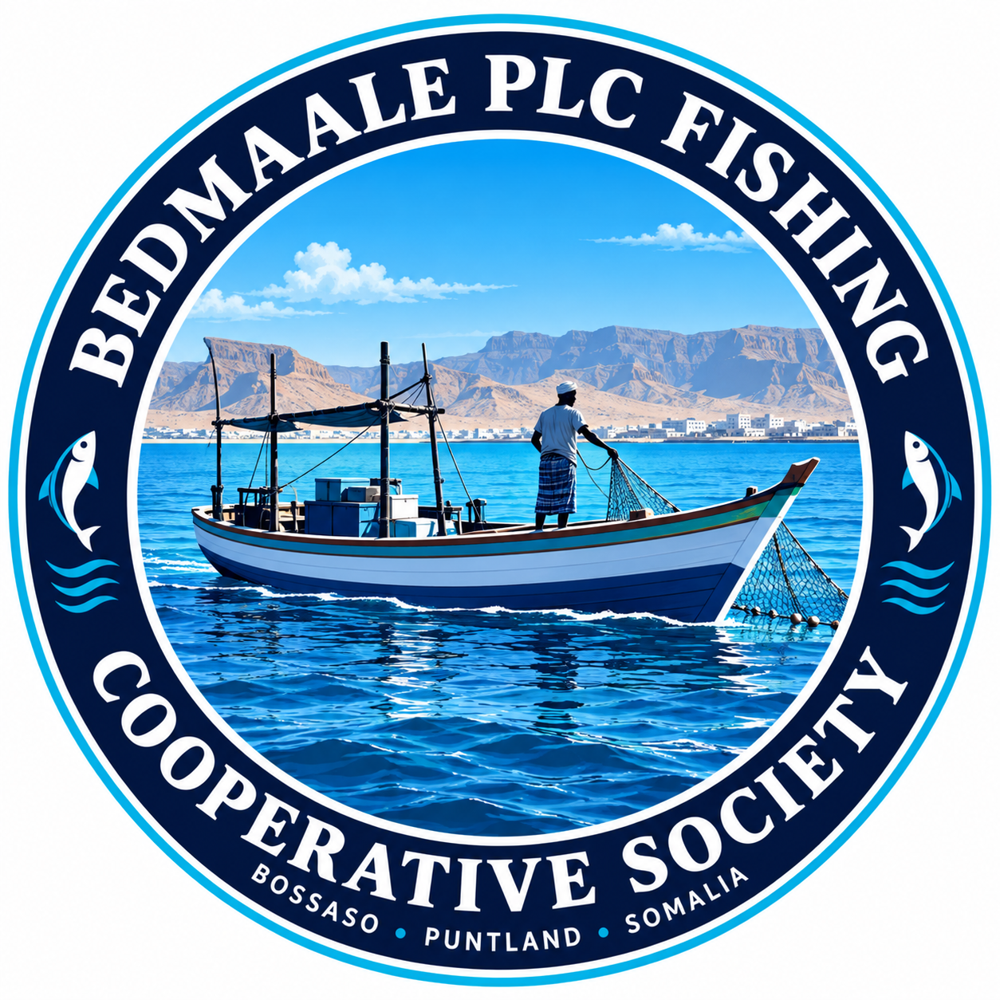
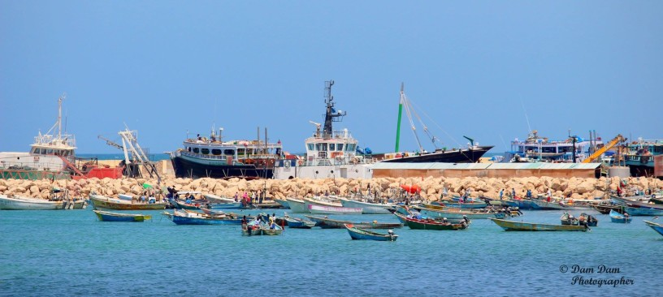
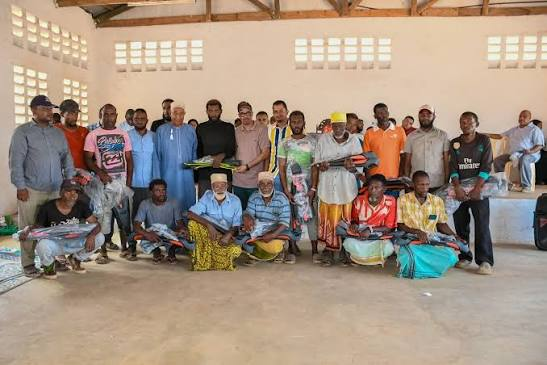
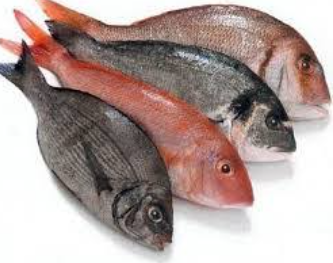
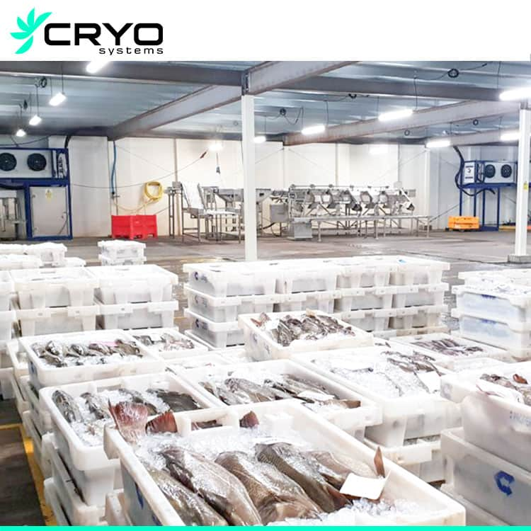
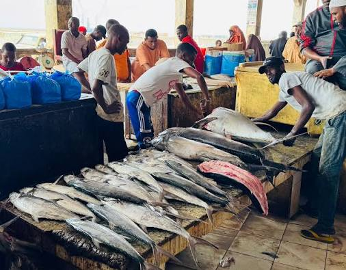
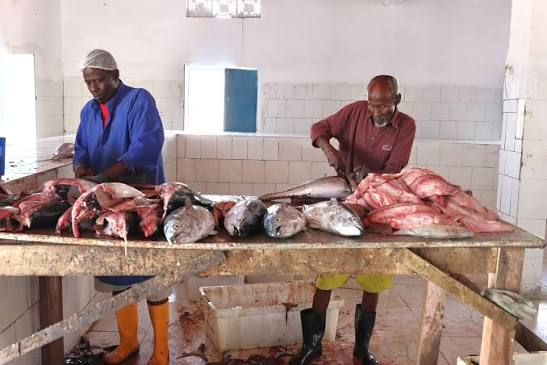

Company History
BEDMAALE PLC is based in Bosaso, Puntland. Our story begins here, on a coast where fishing is part of everyday life. Company milestones and founding details can be added as they are confirmed.

BEDMAALEPLC · FISHING COOPERATIVE
BEDMAALE PLC brings the fishing community of Bosaso together around the sea, its products and the opportunities they create.
Based in Bosaso, Puntland, BEDMAALE PLC Fishing Cooperative is connected to the people and livelihoods shaped by the sea. We are building relationships around local fishing, seafood and the communities behind them.
Learn about our cooperative ↗BEDMAALE PLC is based in Bosaso, Puntland. Our story begins here, on a coast where fishing is part of everyday life. Company milestones and founding details can be added as they are confirmed.
Our aim is to connect local fishing livelihoods with opportunity, while valuing the people, knowledge and marine resources that make this work possible.
Meet the people leading BEDMAALE. Confirmed names, roles and profiles can be added here.

Explore our product and service areas. Current availability, specifications and order requirements should be confirmed with the cooperative.

Ask about current catch, sizes and availability.

Enquire about frozen product options and handling.

Species and seasonal availability can be confirmed for your order.
Discuss preparation, packing formats and requirements for your market.
Contact us to discuss volumes, timing and current supply.
Share your destination and product needs so requirements can be discussed.
Enquire about cold-chain and storage arrangements for your order.
Delivery options depend on location, schedule and product requirements.

LOCAL SKILLS · CAREFUL HANDLINGWe value careful handling, clear information and respect for the marine resources that sustain our coastal communities. Specific procedures and certifications should be confirmed directly with BEDMAALE.
We welcome enquiries from buyers and partners in Somalia and abroad. Contact BEDMAALE to discuss destination-specific needs and current availability.
For local buyers, distributors and food businesses.
For importers and partners to discuss requirements and routes.
When our fishing community thrives,
our whole coast moves forward.